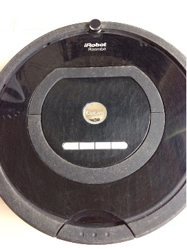
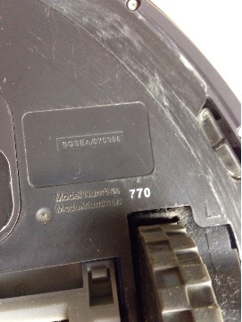
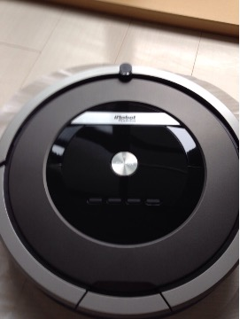
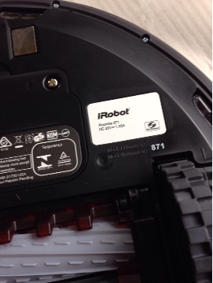
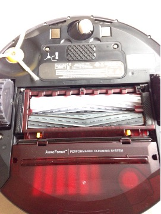

掃除機¶
iRobot ルンバ 770¶
| 使用期間 | 2011/10/xx-2015/07/15 |
|---|---|
| 公式サイト | ルンバ770 |
| 購入サイト | ヨドバシカメラ |

3年半使った外観

辛うじて分かった型番
- いつ買ったか不明だが、 700シリーズプレスリリース によると2011/10/07に販売開始しているようなので、それ以降か
- 3年ちょいの間にバッテリー交換や付属パーツを買い換えも行った
Dyson DC61 モーターヘッド ハンディクリーナー¶
| 使用期間 | 2013/12/30- |
|---|---|
| 公式サイト | D61 - ダイソン公式 |
| 購入サイト | ヨドバシカメラ |
- ヨドバシで購入
- ルンバで掃除できないところ(床より上、棚とか机とか。あとルンバ自体)を掃除するのに結局掃除機が必要だった
- けっこう高音が響く
iRobot ルンバ 871¶
| 使用期間 | 2015/07/16- |
|---|---|
| 公式サイト | ルンバ871 |
| 購入サイト | Amazon |

外観

型番
- ルンバ二代目
- これ自体の発売日は2014年で、既に875/885シリーズが出ていたので結果的に型落ちを購入したことになる
- 875と871では、バッテリー以外の変更点が見当たらなかった

背面は770からかなり変わっている